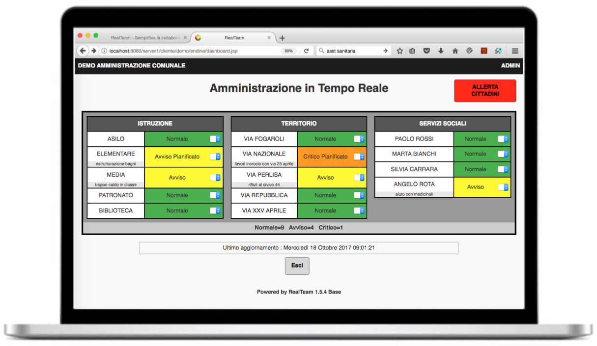
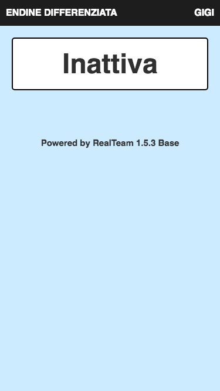
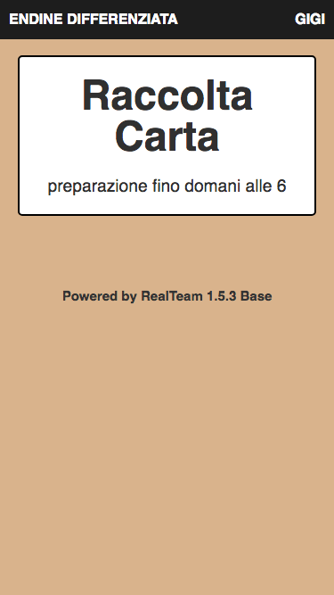
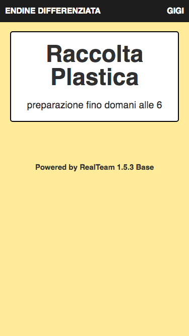
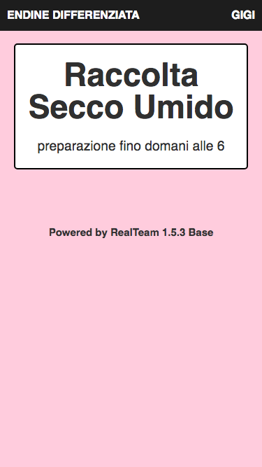
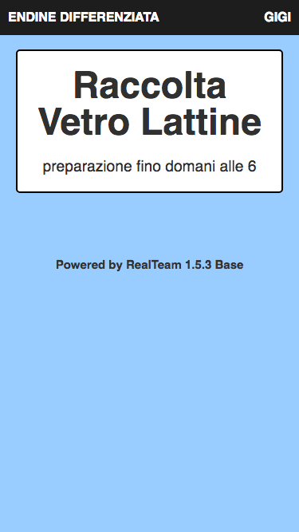
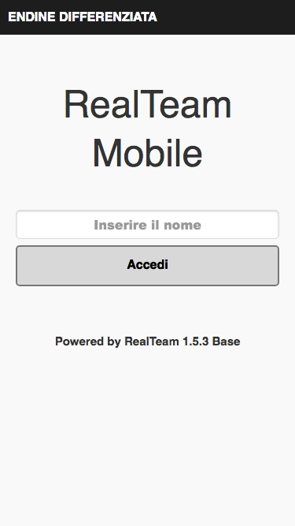
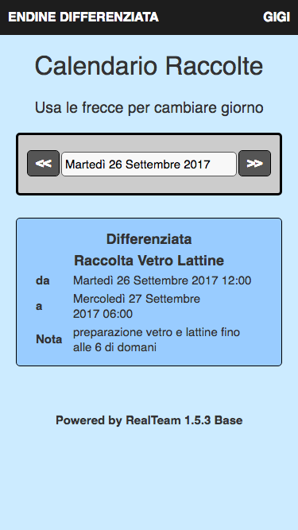
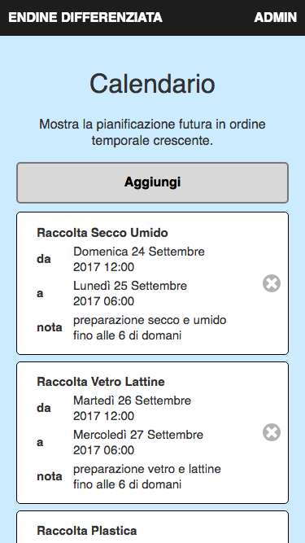

Ci sono molte attivita' e servizi comunali che possono beneficiare da un coinvolgimento piu` diretto dei cittadini. Per esempio, 1) studenti e professori segnalano situazioni che richiedono attenzione in ambito scolastico, 2) residenti alla guida segnalano buche, rifiuti o altre situazioni sulle strade, 3) persone sole chiedono assistenza ai servizi sociali, etc.
RealTeam permette all'amministrazione comunale di incentivare e gestire una collaborazione con i cittadini efficace e utile su tutte queste tematiche e non solo.
I cittadini utilizzano lo smartphone per segnalare situazioni che richiedono attenzione, mentre l'amministrazione vede le segnalazioni in tempo reale e puo' prendere i giusti provvedimenti. Inoltre, con il meccanismo dell'allertamento, l'amministrazione puo' inviare segnalazioni ai cittadini tramite email o SMS in caso di eventi che coinvolgono la comunita' come meteo, processioni, eventi sportivi, etc.
Raccolta differenziata dei rifiuti
La raccolta differenziata e' un'attivita' importante di ogni comune. La soluzione adottata e' di stampare e distribuire annualmente ai cittadini un calendario dei giorni di raccolta. Ogni residente ha la responsabilita' di controllare il calendario giornalmente e preparare i rifiuti quando la raccolta e' attiva.
Con RealTeam Mobile, i residenti verificano dal proprio smartphone se e' ora di preparare la differenziata per la raccolta. Inoltre sono automaticamente allertati via smartphone con messaggi di notifica come email o SMS.
Con RealTeam, il comune riduce i costi di supporto della differenziata e migliora il rapporto collaborativo con i cittadini che si sentono attivamente coivolti nelle attivita' della raccolta differenziata.
Ogni tipo di raccolta e' indicata in modo semplice e chiaro, con codici colore che corrispondono al calendario comunale.
    Gli utenti registrati vedono il calendario delle raccolte e gli amministratori del sistema gestiscono il calendario.
  